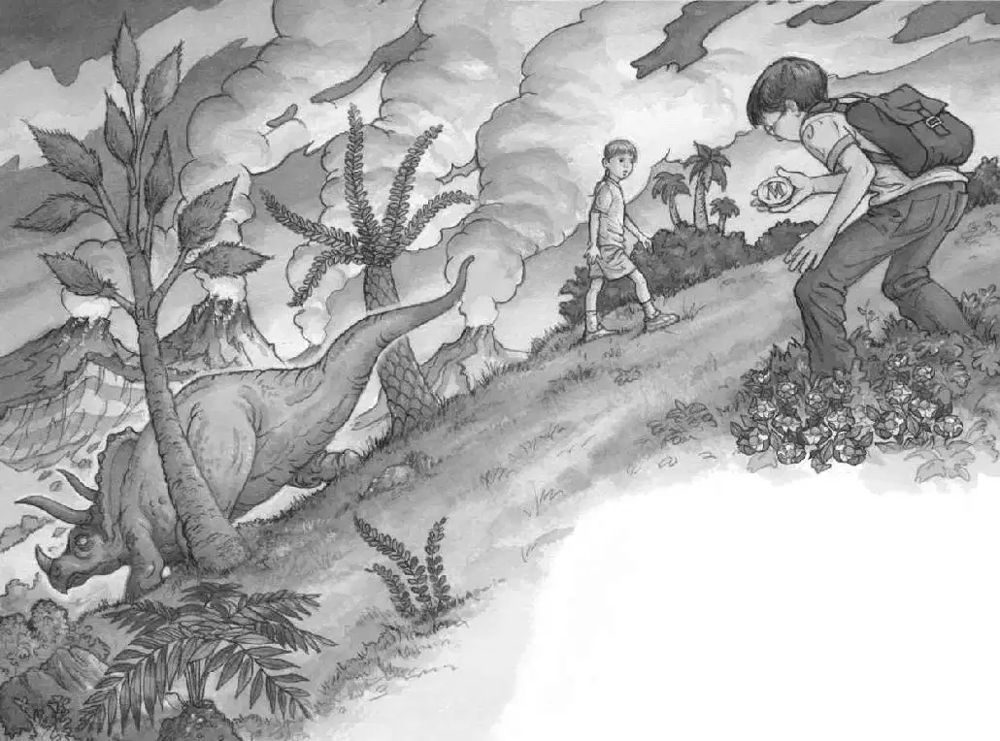

“Go! Go!” said Jack. He threw his notebook into his pack. He pushed Annie toward the rope ladder.
“Bye, Henry!” she said.
“Go!” said Jack. He gave Annie another push.
“Quit it!” she said. But she started up the ladder. Jack scrambled after her.
Jack and Annie tumbled into the tree house. They were panting as they looked out the window at the dinosaur. It was standing on the hilltop, eating flowers off a tree.
“Oh, man,” whispered Jack. “We are in a time long ago!”
The dinosaur looked like a huge rhinoceros with three horns instead of one. It had two long horns above its eyes, and another one grew out from its nose. It had a big shield-like thing behind its head.
“Triceratops!” said Jack.
“Does he eat people?” whispered Annie.
“I’ll look it up.” Jack grabbed the dinosaur book. He flipped through the pages.
“There!” said Jack, pointing to a picture of a Triceratops. He read the caption:
The Triceratops lived in the late Cretaceous Period. This plant-eating dinosaur weighed over 12,000 pounds.
Jack slammed the book shut. “Just plants. No meat.”
“Good!” said Annie. “Let’s go see him up close.”
“Are you crazy?” said Jack.
“Don’t you want to take notes about him?” asked Annie. “We’re probably the first people in the whole world to ever see a real live Triceratops.”
Jack sighed. Annie was right.
“Okay, let’s go,” he said.
Jack shoved the dinosaur book into his pack. He slung his pack over his shoulder. Annie started down the ladder, and Jack followed her.
“Just promise you won’t pet him,” Jack called down to Annie.
“I promise,” said Annie.
“Promise you won’t kiss him,” said Jack.
“I promise,” said Annie.
“Promise you won’t talk to him.”
“I promise,” said Annie.
“Promise you won’t—”
“Don’t worry!” said Annie.
Annie and Jack stepped off the ladder. The Pteranodon gave them a friendly look.
Annie blew him a kiss. “Be back soon, Henry!” she called.
“Shhh!” said Jack. And he led the way slowly and carefully through the ferns.
When Jack and Annie reached the bottom of the hill, they knelt behind a bush. Annie started to speak, but Jack quickly put his finger to his lips. Then he and Annie peeked out at the Triceratops.
The dinosaur was bigger than a truck. He was eating the flowers off a magnolia tree.
Jack slipped his notebook out of his pack. He wrote:
eats flowers
Annie nudged him.
Jack ignored her. He studied the Triceratops again. He wrote:
eats slowly
Annie nudged him harder.
Jack looked at her.
Annie pointed to herself. She walked her fingers through the air. She pointed to the dinosaur. She smiled.
Is she teasing? Jack wondered.
Annie waved at Jack.
Jack started to grab her.
She laughed and jumped away. She fell into the grass in full view of the Triceratops!
“Get back!” whispered Jack.
Too late. The big dinosaur had spotted Annie. He gazed down at her from the hilltop. Half of a magnolia flower was sticking out of his mouth.
“Oops,” said Annie.
“Get back!” Jack said again.
“He looks nice, Jack,” Annie said.
“Nice? Watch out for his horns, Annie!” said Jack.
The Triceratops gazed calmly down at Annie. Then he turned and loped down the side of the hill.
“Bye!” said Annie. She turned back to Jack. “See?”
Jack grunted. But he wrote in his notebook:
nice
“Come on. Let’s look around some more,” said Annie.

As Jack started after Annie, he saw something glittering in the tall grass.
Jack reached down and picked it up. It was a gold medallion.
A letter was engraved on the medallion: a fancy M.
“Oh, man. Someone was here before us!” Jack said softly.